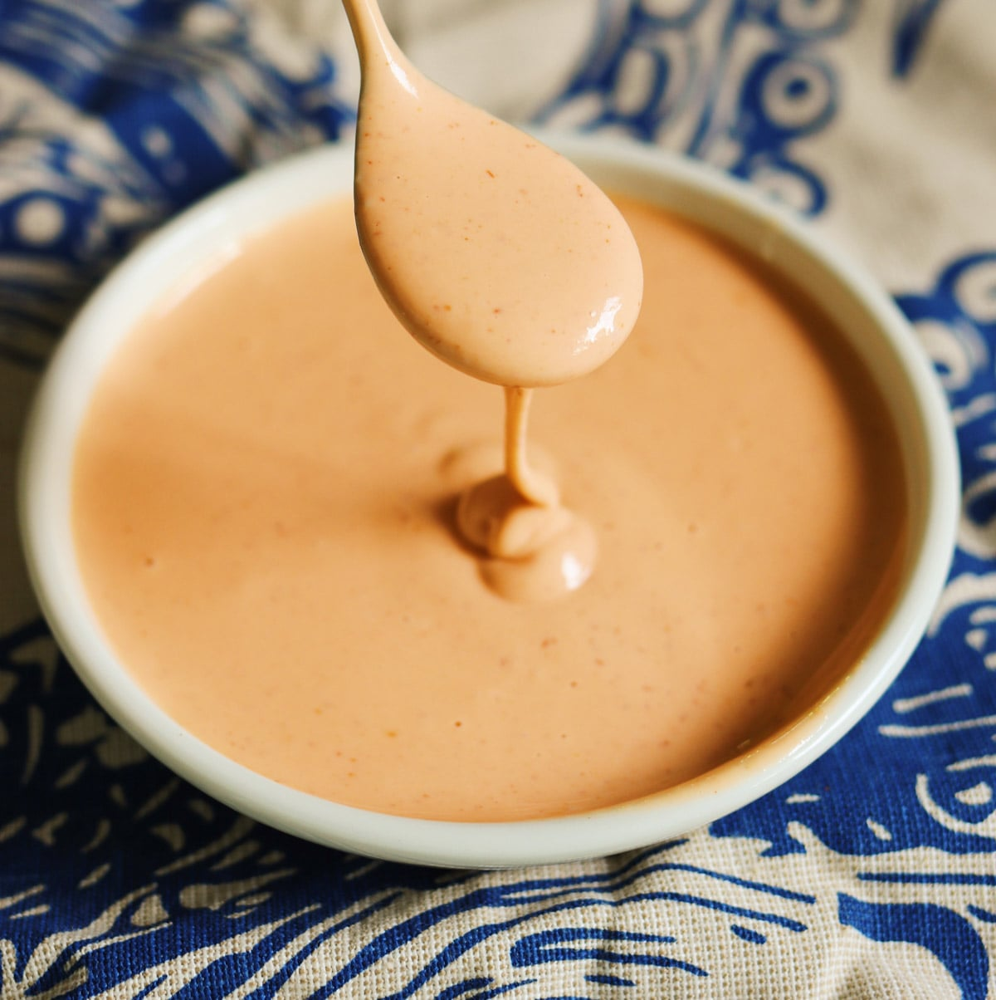

Back
Spicy Mayo Sauce

Description
This spicy mayo recipe is a snap. You know the flavored mayonnaise you get in sushi restaurants and grocery stores? Pay no more! It's so easy to make at home. Try sprinking crispy fried onions over the suace - it's pretty good!
Ingredients
- 2 tablespoons mayonnaise
- 2 teaspoons sriracha hot suace
- 1/4 teaspoon sesame oil
Directions
- Gather all ingredients
- Mix mayonnaise, sriracha, and sesame oil together in a bowl using a fork until smooth.
- Serve with your favorite sushi. Enjoy!
Nutrition Facts (per serving)
- Calories 107
- Fat 12g
- Carbs 1g
- Protein 0g